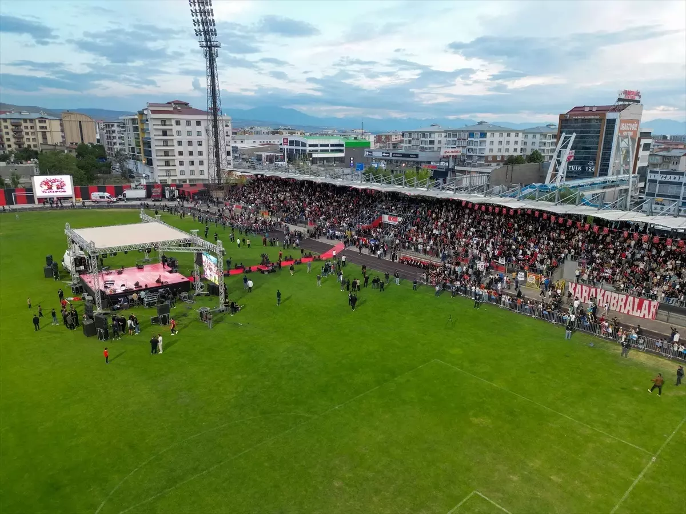

Türk futbolunda son yılların en dikkat çeken başarı hikâyelerinden biri, Doğu Anadolu temsilcisi Vanspor FK’den geldi. Kırmızı-siyahlı ekip, TFF 2. Lig play-off finalinde rakibi Batman Petrolspor’u penaltı atışları sonucunda mağlup ederek TFF 1. Lig’e yükselmeyi başardı. Bu tarihi başarı hem Van şehrinde hem de kulüp tarihinde unutulmaz bir sevinç yaşanmasına neden oldu. Zorlu Final, Büyük Zafer Play-off finalinde iki güçlü ekip karşı karşıya geldi.

Kayseri’de oynanan karşılaşmanın normal süresi ve uzatma dakikaları golsüz eşitlikle tamamlandı. İki takım da maç boyunca savunmada dikkatli oynarken, net gol fırsatlarını değerlendiremedi. Maçın kaderi penaltı atışlarına kaldı. Penaltı serisinde daha soğukkanlı olan Vanspor, rakibini 5-4 mağlup ederek büyük bir başarı elde etti ve 1. Lig biletini aldı. Bu sonuçla birlikte Vanspor kulüp tarihinde önemli bir dönüm noktasına ulaştı. Van’da Büyük Coşku Final düdüğünün ardından Van şehrinde adeta bayram havası yaşandı. Taraftarlar gece boyunca sokaklarda kutlamalar yaptı. Şehrin birçok noktasında konvoylar oluşturulurken, Vanspor taraftarları takımlarının uzun yıllar sonra yakaladığı bu başarıyı büyük bir gururla kutladı. Kulüp yönetimi, teknik ekip ve futbolcular da taraftarlara teşekkür ederek bu başarının Van halkına armağan edildiğini belirtti. Özellikle sezon boyunca takımın yanında olan taraftarların desteği, oyuncular tarafından sık sık vurgulandı. Zorlu Bir Sezonun Ardından Vanspor için sezon oldukça zorlu geçti. Lig boyunca güçlü rakiplerle mücadele eden ekip, play-off aşamasına kalarak şampiyonluk hedefini sürdürdü. Play-off maçlarında gösterilen mücadele ve takım ruhu, finalde gelen başarının en önemli nedenlerinden biri oldu. Teknik ekip ve futbolcular, sezon boyunca disiplinli bir çalışma sergileyerek hedeflerinden vazgeçmedi. Bu kararlılık sonunda Vanspor, Türk futbolunun önemli liglerinden biri olan 1. Lig’e yükselme başarısı gösterdi. Yeni Hedef: 1. Lig’de Kalıcı Olmak Vanspor için yeni bir dönem başlamış durumda. Kulüp yönetimi, 1. Lig’de kalıcı olmak ve ilerleyen yıllarda daha büyük hedeflere ulaşmak için çalışmalarını sürdürüyor. Yeni sezonda Vanspor, Türkiye’nin köklü kulüplerine karşı mücadele edecek ve hem şehir hem de taraftarlar için yeni bir heyecan yaşanacak. Uzun yıllar sonra gelen bu başarı, Vanspor’un Türk futbolundaki yerini güçlendiren önemli bir adım olarak görülüyor. Ana Sayfaya dön